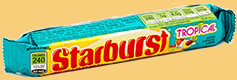
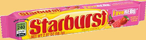
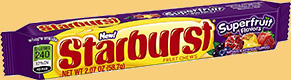
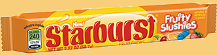
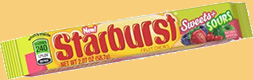

What's Your Flavour?
Gone are the days when everyone wants to know your sign...it's all about your flavour!
Original
All the classic flavours you know and 💗.
Strawberry, cherry, orange, and lemon.
Tropical
Make every day a trip to the tropics. 🌴
Mango melon, pina colada, strawberry banana, and royal berry punch.
FaveREDs
For those of us who 👍 monochromatic colour schemes.
Strawberry, fruit punch, watermelon, and cherry.
Superfruit
They're super. They're fruit. Need we say more? 🍓
Raspberry pomegranate, strawberry starfruit, passionfruit punch, blueberry acai.
Fruity Slushies
For when you'd rather eat your favourite drink. 🍷
Strawberry lemonade chill, citrus slush, cherry splash, and blue raspberry rush.
Sweets + Sours
The perfect go-to mix for when you're feeling sour. Turn that 😒 into one of these 😜.
Strawberry, blackberry, sour cherry, and sour green apple.